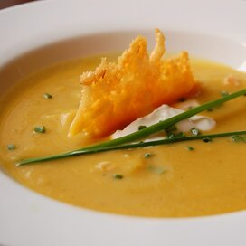

Pumpkin Soup

This delicious, cream-like soup is served at our family's
Thanksgiving dinner every year.
Geared towards the hardworking families on Thanksgiving who are trying to go the extra mile!
This easy, simple recipe will barely add any time to your
already busy, holiday cookout!
Ingredients
- 6 cups chicken stock
- 1 & 1/2 teaspoons salt
- 4 cups pumpkin puree
- 1 teaspoon chopped fresh parsley
- 1 cup chopped onion
- 1/2 teaspoon chopped fresh thyme
- 1 clove garlic, minced
- 1/2 cup heavy whipping cream
- 5 whole black peppercorns
Steps
- Heat stock, salt, pumpkin, onion, thyme, garlic, and peppercorns.
Bring to a boil, reduce heat to low, and simmer for 30 minutes uncovered.
- Puree the soup in small batches (1 cup at a time)
using a food processor or blender.
- Return to pan, and bring to a boil again.
Reduce heat to low, and simmer for another 30 minutes, uncovered. Stir in heavy cream.
Pour into soup bowls and garnish with fresh parsley.
Home